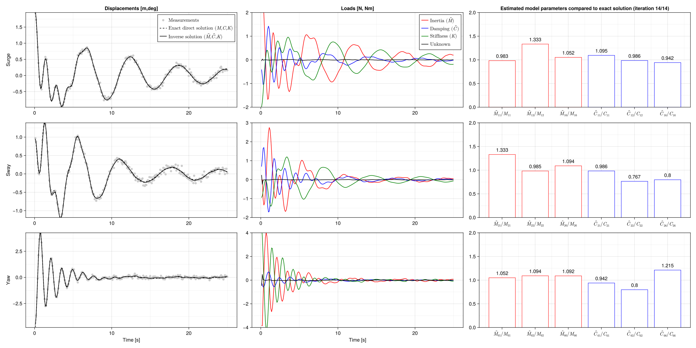

Estimating model parameters
We estimate the mass and damping matrices of a coupled linear oscillator (floater moving in the surge, sway and yaw) based on a decay tests In the following, we define the necessary element and residual function describing the dynamic behaviour of the floater.
using Muscade,StaticArrays,Interpolations,GLMakie
fold(x::SVector{6}) = SMatrix{3,3}( x[1],x[2],x[3],
x[2],x[4],x[5],
x[3],x[5],x[6])
const floatermotion = (:surge,:sway,:yaw)
const idx = (:11,:12,:16,:22,:26,:66)
struct FloaterOnCalmWater <: AbstractElement
K :: SMatrix{3,3,ùï£}
C :: SMatrix{3,3,ùï£}
M :: SMatrix{3,3,ùï£}
end
FloaterOnCalmWater(nod::Vector{Node};K,C,M ) = FloaterOnCalmWater(K,C,M)
Muscade.nosecondorder(::Type{<:FloaterOnCalmWater}) = Val(true)
Muscade.doflist(::Type{<:FloaterOnCalmWater}) = (inod = (ntuple(i-> 1,3)...,ntuple(i-> 1,3)...,ntuple(i-> 1,6)..., ntuple(i-> 1,6)... ),
class = (ntuple(i->:X,3)...,ntuple(i->:U,3)...,ntuple(i->:A,6)..., ntuple(i->:A,6)... ),
field = (floatermotion... ,floatermotion... ,ntuple(i->Symbol(:M,idx[i]),6)..., ntuple(i->Symbol(:C,idx[i]),6)...))
@espy function Muscade.residual(o::FloaterOnCalmWater, X,U,A,t,SP,dbg)
x,x′,x″ = ∂0(X),∂1(X),∂2(X)
☼u = ∂0(U)
a = exp10.(A)
☼r₂ = (o.M.*fold(a[@SVector [i for i∈1:6 ]]))∘₁x″
☼r₁ = (o.C.*fold(a[@SVector [i for i∈7:12]]))∘₁x′
☼r₀ = o.K∘₁x
return r₀+r₁+r₂-u, noFB
endThis is a tailor-made cost element where the cost is made dependent on the iteration number. In practice, this is used to first solve an XU problem (costs on A are prohibitive) before solving the actual XUA problem.
struct SingleDecayAcost{Field,Tcost,Tcostargs} <: AbstractElement
cost :: Tcost
costargs :: Tcostargs
fac :: ùï£1
end
SingleDecayAcost(nod::Vector{Node};field::Symbol,fac,cost::Function ,costargs=()) = SingleDecayAcost{field,typeof(cost),typeof(costargs)}(cost,costargs,fac)
Muscade.doflist(::Type{<:SingleDecayAcost{Field,Tcost,Tcostargs}}) where{Field,Tcost,Tcostargs} = (inod=(1,),class=(:A,),field=(Field,))
@espy function Muscade.lagrangian(o::SingleDecayAcost,Λ,X,U,A,t,SP,dbg)
iter = min(length(o.fac),default{:iter}(SP,length(o.fac)))
☼cost = o.cost( A[1] ,o.costargs...)
return cost*o.fac[iter],noFB
endDefine stiffness, damping and mass matrix for the true system
K = fold(SVector{6}([1.0, 0.0, 0.0, 1.0, 0.0, 1.0]))
C = fold(SVector{6}([0.25, -0.2, 0.1, 0.15, -0.15, 0.03]))
M = fold(SVector{6}([1.0, 0.1, 0.2, 0.5, 0.1, 0.1]));Solve direct problem
model = Model(:MooredFloater)
n1 = addnode!(model,ùï£[0,0,0])
e1 = addelement!(model,FloaterOnCalmWater,[n1]; K,C,M)
initialstate = initialize!(model;time=0.)
initialstate = setdof!(initialstate,[2.0]; field=:surge, nodID=[n1], order=0)
initialstate = setdof!(initialstate,[1.0]; field=:sway, nodID=[n1], order=0)
initialstate = setdof!(initialstate,[-5.0]; field=:yaw, nodID=[n1], order=0)
T = 0.1 *(1:250)
state = solve(SweepX{2}; initialstate,time= T,verbose=false);
surge = [s.X[1][1] for s∈state]
sway = [s.X[1][2] for s∈state]
yaw = [s.X[1][3] for s∈state];Create fake measurements
surgeMeas = surge + .05 * randn(length(T))
swayMeas = sway + .05 * randn(length(T))
yawMeas = yaw + .1 * randn(length(T));Create intial guesses for M and C
Cguess = fold(SVector{6}([0.1, -0.1, 0.1, 0.1, -0.1, 0.1]))
Mguess = fold(SVector{6}([1.0, 1.0, 1.0, 1.0, 1.0, 1.0]));Create XUA model
modelXUA = Model(:MooredFloater)
n1 = addnode!(modelXUA,ùï£[0,0,0])
e1 = addelement!(modelXUA,FloaterOnCalmWater,[n1]; K,C=Cguess,M=Mguess);Assign costs to unknown forces
Quu = @SVector [0.05 ^-2 for i=1:3 ]
e2 = [addelement!(modelXUA,SingleDofCost ,[n1]; class=:U,field=f , cost=(u,t)-> 0.5*Quu[i]*u^2) for (i,f)∈enumerate(floatermotion)];Assign costs to variations of model parameters (wrt guess).
fac = [256,128,64,32,16,8,4,2,1]
QCaa = @SVector [.1 ^-2 for i=1:6 ]
e3 = [addelement!(modelXUA,SingleDecayAcost ,[n1]; field=f,fac, cost=(a )-> 0.5*QCaa[i]/length(T)*a^2) for (i,f)∈enumerate((:C11,:C12,:C16,:C22,:C26,:C66))]
QMaa = @SVector [.1 ^-2 for i=1:6 ]
e4 = [addelement!(modelXUA,SingleDecayAcost ,[n1]; field=f,fac, cost=(a )-> 0.5*QMaa[i]/length(T)*a^2) for (i,f)∈enumerate((:M11,:M12,:M16,:M22,:M26,:M66))];Assign costs to measurement errors
surgeInt = linear_interpolation(T, surgeMeas)
swayInt = linear_interpolation(T, swayMeas)
yawInt = linear_interpolation(T, yawMeas)
@once surge devSurge(surge,t) = 1e-1 ^-2 * (surge-surgeInt(t))^2
@once sway devSway(sway,t) = 1e-1 ^-2 * (sway-swayInt(t))^2
@once yaw devYaw(yaw,t) = 1e-1 ^-2 * (yaw-yawInt(t))^2
e5 = addelement!(modelXUA,SingleDofCost,[n1];class=:X,field=:surge, cost=devSurge)
e6 = addelement!(modelXUA,SingleDofCost,[n1];class=:X,field=:sway, cost=devSway)
e7 = addelement!(modelXUA,SingleDofCost,[n1];class=:X,field=:yaw, cost=devYaw);
#Solve inverse problem
initialstateXUA = initialize!(modelXUA;time=0.)
stateXUA = solve(DirectXUA{2,0,1};initialstate=initialstateXUA,time=T,
maxiter=100,saveiter=true,
maxΔx=1e-5,maxΔλ=Inf,maxΔu=1e-5,maxΔa=1e-5);
Muscade: DirectXUA{2, 0, 1} solver
Preparing assembler
Iteration 1
Assembling, solving, decrementing.
maxₜ(|ΔΛ|)=6.1e+02 ≤ Inf
maxₜ(|ΔX|)=2.1e+00 ≤ 1.0e-05
maxₜ(|ΔU|)=1.5e+00 ≤ 1.0e-05
|ΔA| =0.0e+00 ≤ 1.0e-05
Iteration 2
Assembling, solving, decrementing.
maxₜ(|ΔΛ|)=4.0e+02 ≤ Inf
maxₜ(|ΔX|)=1.2e+00 ≤ 1.0e-05
maxₜ(|ΔU|)=6.4e-01 ≤ 1.0e-05
|ΔA| =2.2e-01 ≤ 1.0e-05
Iteration 3
Assembling, solving, decrementing.
maxₜ(|ΔΛ|)=2.0e+02 ≤ Inf
maxₜ(|ΔX|)=1.7e+00 ≤ 1.0e-05
maxₜ(|ΔU|)=1.1e+00 ≤ 1.0e-05
|ΔA| =2.6e-01 ≤ 1.0e-05
Iteration 4
Assembling, solving, decrementing.
maxₜ(|ΔΛ|)=1.9e+02 ≤ Inf
maxₜ(|ΔX|)=1.2e+00 ≤ 1.0e-05
maxₜ(|ΔU|)=3.2e-01 ≤ 1.0e-05
|ΔA| =6.0e-01 ≤ 1.0e-05
Iteration 5
Assembling, solving, decrementing.
maxₜ(|ΔΛ|)=2.1e+02 ≤ Inf
maxₜ(|ΔX|)=9.6e-01 ≤ 1.0e-05
maxₜ(|ΔU|)=2.4e-01 ≤ 1.0e-05
|ΔA| =6.1e-01 ≤ 1.0e-05
Iteration 6
Assembling, solving, decrementing.
maxₜ(|ΔΛ|)=2.0e+02 ≤ Inf
maxₜ(|ΔX|)=6.9e-01 ≤ 1.0e-05
maxₜ(|ΔU|)=2.1e-01 ≤ 1.0e-05
|ΔA| =5.0e-01 ≤ 1.0e-05
Iteration 7
Assembling, solving, decrementing.
maxₜ(|ΔΛ|)=2.0e+02 ≤ Inf
maxₜ(|ΔX|)=3.4e-01 ≤ 1.0e-05
maxₜ(|ΔU|)=1.4e-01 ≤ 1.0e-05
|ΔA| =2.9e-01 ≤ 1.0e-05
Iteration 8
Assembling, solving, decrementing.
maxₜ(|ΔΛ|)=2.2e+02 ≤ Inf
maxₜ(|ΔX|)=1.7e-01 ≤ 1.0e-05
maxₜ(|ΔU|)=5.4e-02 ≤ 1.0e-05
|ΔA| =1.5e-01 ≤ 1.0e-05
Iteration 9
Assembling, solving, decrementing.
maxₜ(|ΔΛ|)=2.2e+02 ≤ Inf
maxₜ(|ΔX|)=4.8e-02 ≤ 1.0e-05
maxₜ(|ΔU|)=1.3e-02 ≤ 1.0e-05
|ΔA| =1.0e-01 ≤ 1.0e-05
Iteration 10
Assembling, solving, decrementing.
maxₜ(|ΔΛ|)=2.2e+02 ≤ Inf
maxₜ(|ΔX|)=4.9e-03 ≤ 1.0e-05
maxₜ(|ΔU|)=2.3e-03 ≤ 1.0e-05
|ΔA| =8.5e-03 ≤ 1.0e-05
Iteration 11
Assembling, solving, decrementing.
maxₜ(|ΔΛ|)=2.2e+02 ≤ Inf
maxₜ(|ΔX|)=4.3e-04 ≤ 1.0e-05
maxₜ(|ΔU|)=2.0e-04 ≤ 1.0e-05
|ΔA| =1.0e-03 ≤ 1.0e-05
Iteration 12
Assembling, solving, decrementing.
maxₜ(|ΔΛ|)=2.2e+02 ≤ Inf
maxₜ(|ΔX|)=6.0e-05 ≤ 1.0e-05
maxₜ(|ΔU|)=3.7e-05 ≤ 1.0e-05
|ΔA| =1.8e-04 ≤ 1.0e-05
Iteration 13
Assembling, solving, decrementing.
maxₜ(|ΔΛ|)=2.2e+02 ≤ Inf
maxₜ(|ΔX|)=9.9e-06 ≤ 1.0e-05
maxₜ(|ΔU|)=6.7e-06 ≤ 1.0e-05
|ΔA| =3.2e-05 ≤ 1.0e-05
Iteration 14
Assembling, solving, decrementing.
maxₜ(|ΔΛ|)=2.2e+02 ≤ Inf
maxₜ(|ΔX|)=2.0e-06 ≤ 1.0e-05
maxₜ(|ΔU|)=1.4e-06 ≤ 1.0e-05
|ΔA| =6.4e-06 ≤ 1.0e-05
Converged in 14 iterations.
nel=19, nvar=2262, nstep=250
DirectXUA{2, 0, 1} time: 10 [s]
Muscade done.Fetch and display estimated model parameters
lastIter = findlastassigned(stateXUA); niter = lastIter;
Mest = Mguess .* fold(exp10.(SVector{6}(stateXUA[niter][1].A[1:6 ])))
Cest = Cguess .* fold(exp10.(SVector{6}(stateXUA[niter][1].A[7:12])));Fetch response and loads
surgeRec = [s.X[1][1] for s∈stateXUA[niter]]
swayRec = [s.X[1][2] for s∈stateXUA[niter]]
yawRec = [s.X[1][3] for s∈stateXUA[niter]]
surgeExtF = [s.U[1][1] for s∈stateXUA[niter]]
swayExtF = [s.U[1][2] for s∈stateXUA[niter]]
yawExtF = [s.U[1][3] for s∈stateXUA[niter]]
req = @request r₂,r₁,r₀
loads = getresult(stateXUA[niter],req,[e1])
inertiaLoads = [loads[i][:r₂] for i∈1:length(T)]
dampingLoads = [loads[i][:r₁] for i∈1:length(T)]
stiffnessLoads = [loads[i][:r₀] for i∈1:length(T)];Create a figure with the results
fig = Figure(size = (2000,1000));Display response
ax=Axis(fig[1,1], ylabel="Surge", yminorgridvisible = true,xminorgridvisible = true)
scatter!(fig[1,1],T,surgeMeas, color=RGBf(.8, .8, .8), label=L"\text{Measurements}")
lines!(fig[1,1],T,surge, color=:black, linestyle=:dash, label=L"\text{Exact direct solution } (M,C,K)")
lines!(fig[1,1],T,surgeRec, color=:black, label=L"\text{Inverse solution } (\hat{M},\hat{C},K)")
ylims!(ax,minimum(surgeMeas),maximum(surgeMeas))
ax.title="Displacements [m,deg]"
axislegend()
ax=Axis(fig[2,1], ylabel="Sway", yminorgridvisible = true,xminorgridvisible = true)
scatter!(fig[2,1],T,swayMeas, color=RGBf(.8, .8, .8))
lines!(fig[2,1],T,sway, color=:black, linestyle=:dash)
ylims!(ax,-1,2)
lines!(fig[2,1],T,swayRec, color=:black)
ylims!(ax,minimum(swayMeas),maximum(swayMeas))
ax=Axis(fig[3,1], ylabel="Yaw", yminorgridvisible = true,xminorgridvisible = true,xlabel="Time [s]")
scatter!(fig[3,1],T,yawMeas, color=RGBf(.8, .8, .8))
lines!(fig[3,1],T,yaw, color=:black, linestyle=:dash)
lines!(fig[3,1],T,yawRec, color=:black)
ylims!(ax,minimum(yawMeas),maximum(yawMeas))Display loads
ax=Axis(fig[1,2], yminorgridvisible = true,xminorgridvisible = true)
lines!(fig[1,2],T,-[inertiaLoads[i][1] for i∈1:length(T)], color=:red, label=L"\text{Inertia } (\hat{M})")
lines!(fig[1,2],T,-[dampingLoads[i][1] for i∈1:length(T)], color=:blue, label=L"\text{Damping } (\hat{C})")
lines!(fig[1,2],T,-[stiffnessLoads[i][1] for i∈1:length(T)],color=:green, label=L"\text{Stiffness } (K)")
lines!(fig[1,2],T,surgeExtF, color=:black, label=L"\text{Unknown}")
ax.title="Loads [N, Nm]"
ylims!(ax,-2,2)
axislegend()
ax=Axis(fig[2,2], yminorgridvisible = true,xminorgridvisible = true)
lines!(fig[2,2],T,-[inertiaLoads[i][2] for i∈1:length(T)], color=:red )
lines!(fig[2,2],T,-[dampingLoads[i][2] for i∈1:length(T)], color=:blue )
lines!(fig[2,2],T,-[stiffnessLoads[i][2] for i∈1:length(T)], color=:green)
lines!(fig[2,2],T,swayExtF, color=:black)
ylims!(ax,-2,3)
ax=Axis(fig[3,2], yminorgridvisible = true,xminorgridvisible = true,xlabel="Time [s]")
lines!(fig[3,2],T,-[inertiaLoads[i][3] for i∈1:length(T)], color=:red )
lines!(fig[3,2],T,-[dampingLoads[i][3] for i∈1:length(T)], color=:blue)
lines!(fig[3,2],T,-[stiffnessLoads[i][3] for i∈1:length(T)], color=:green)
lines!(fig[3,2],T,yawExtF, color=:black)
ylims!(ax,-4,4)
ax=Axis(fig[1,3], limits=(nothing,nothing,0,2),
xticks = (1:6, [L"\hat{M}_{11}/M_{11}", L"\hat{M}_{12}/M_{12}", L"\hat{M}_{16}/M_{16}",L"\hat{C}_{11}/C_{11}", L"\hat{C}_{12}/C_{12}", L"\hat{C}_{16}/C_{16}"]),
yminorgridvisible = true,xminorgridvisible = true)
barplot!(ax,[1,2,3,4,5,6], [Mest[1,1]/M[1,1],Mest[1,2]/M[1,2],Mest[1,3]/M[1,3], Cest[1,1]/C[1,1],Cest[1,2]/C[1,2],Cest[1,3]/C[1,3]],
bar_labels = :y,color=:white,strokewidth=1,strokecolor=[:red,:red,:red,:blue,:blue,:blue])
ax.title="Estimated model parameters compared to exact solution (iteration " * string(niter) * "/" * string(lastIter) * ")"
ax=Axis(fig[2,3], limits=(nothing,nothing,0,2),
xticks = (1:6, [L"\hat{M}_{21}/M_{21}", L"\hat{M}_{22}/M_{22}", L"\hat{M}_{26}/M_{26}",L"\hat{C}_{21}/C_{21}", L"\hat{C}_{22}/C_{22}", L"\hat{C}_{26}/C_{26}"]),
yminorgridvisible = true,xminorgridvisible = true)
barplot!(ax,[1,2,3,4,5,6], [Mest[2,1]/M[2,1],Mest[2,2]/M[2,2],Mest[2,3]/M[2,3], Cest[2,1]/C[2,1],Cest[2,2]/C[2,2],Cest[2,3]/C[2,3]],
bar_labels = :y,color=:white,strokewidth=1,strokecolor=[:red,:red,:red,:blue,:blue,:blue])
ax=Axis(fig[3,3], limits=(nothing,nothing,0,2),
xticks = (1:6, [L"\hat{M}_{61}/M_{61}", L"\hat{M}_{62}/M_{62}", L"\hat{M}_{66}/M_{66}",L"\hat{C}_{61}/C_{61}", L"\hat{C}_{62}/C_{62}", L"\hat{C}_{66}/C_{66}"]),
yminorgridvisible = true,xminorgridvisible = true)
barplot!(ax,[1,2,3,4,5,6], [Mest[3,1]/M[3,1],Mest[3,2]/M[3,2],Mest[3,3]/M[3,3], Cest[3,1]/C[3,1],Cest[3,2]/C[3,2],Cest[3,3]/C[3,3]],
bar_labels = :y,color=:white,strokewidth=1,strokecolor=[:red,:red,:red,:blue,:blue,:blue])
currentDir = @__DIR__
if occursin("build", currentDir)
save(normpath(joinpath(currentDir,"..","src","assets","decay.png")),fig)
elseif occursin("examples", currentDir)
save(normpath(joinpath(currentDir,"decay.png")),fig)
end
This page was generated using Literate.jl.